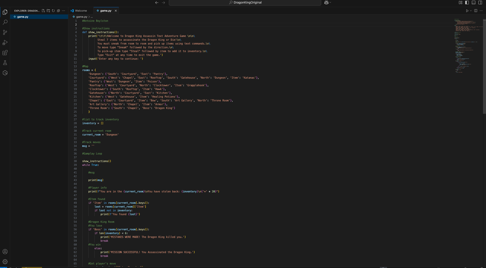
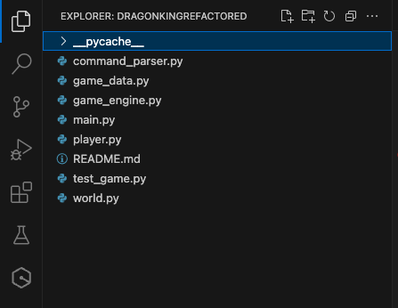
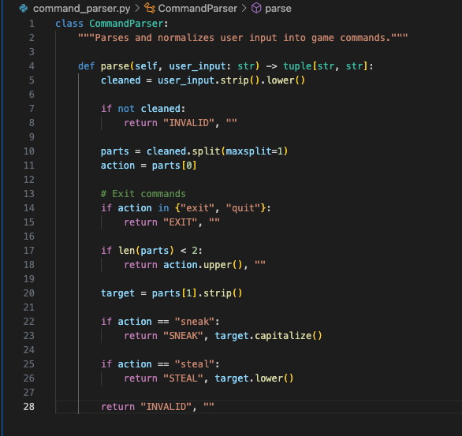

Dragon King Assassin Refactor
Dragon King Assassin is a text-based adventure game originally developed in Python as part of an early programming course. The application allows a player to navigate rooms, collect items, and attempt to defeat a final boss based on game progression. The original implementation relied on a single procedural script, which limited scalability and maintainability.
This artifact was selected because it provides a clear demonstration of my growth from foundational programming concepts to more advanced software engineering practices. While the original version showcases basic control flow and data handling, the enhanced version reflects my ability to design modular, maintainable, and scalable systems.
The original program was written as a single script containing all game logic, including movement, item tracking, and user input handling. This tightly coupled design made it difficult to extend functionality or test individual components.

Original procedural implementation with all logic in a single script.
The enhanced version of the game was refactored into a modular architecture with clearly defined components, including a game engine, player model, world model, command parser, and data module. This separation of concerns significantly improved code organization, readability, and maintainability.

Refactored modular structure with separated components.

Command parser implementation improving input handling.
This enhancement aligns with key course outcomes by demonstrating the ability to design and evaluate computing solutions using software engineering principles (Outcome 3), communicate effectively through organized and documented code (Outcome 2), and improve system reliability through better validation and structure (Outcome 5).
This enhancement reinforced the importance of writing code that is not only functional but also maintainable and scalable. One of the main challenges was breaking apart tightly coupled logic into separate modules while preserving functionality. Through this process, I gained a deeper understanding of system design and how to structure applications for long-term growth.